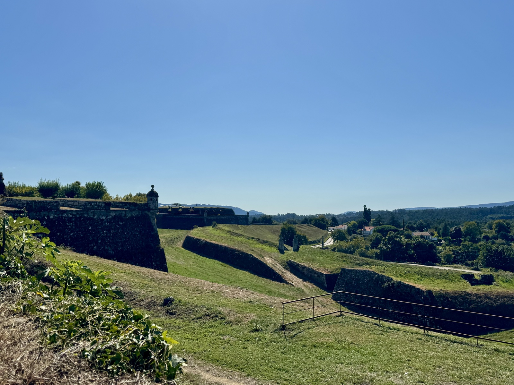
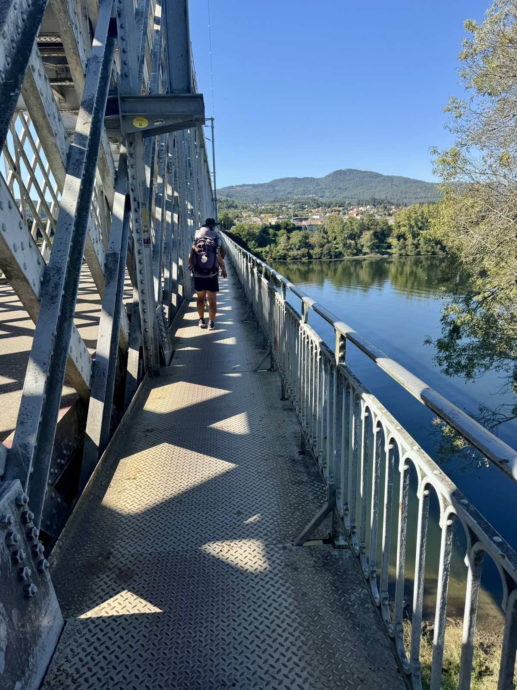
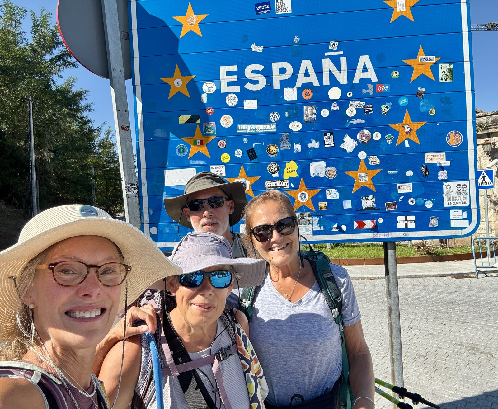
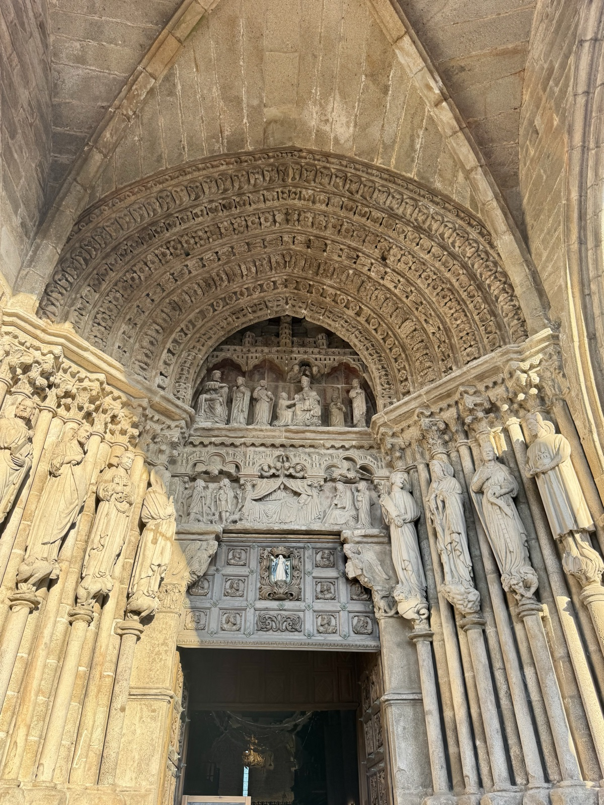

Day 6: Rubiaes to Tui, Spain
Data: 12.67 miles, 5:15 hours moving time, elevation 1,168 feet
Today was a smorgasbord of hiking surfaces—stones, cobblestones, forest floor. The morning stroll through grape vines and winding paths was pleasant, quiet, and peaceful. A goat herd led by a local herder cheerfully passed by us. Then the heat poured over us in the afternoon and the rural path turned into industrial roadway with small chapels along the way. The dust kicked up and the 12.1 mile hike was the longest day. Longest day until we hit Valenca—a town within medieval castle walls. So picturesque!

After a late lunch the Camino took us over the bridge to Tui Spain! I did not enjoy the walk over the bridge due to my vertigo, but with the support of my friends I persisted.


We visited the beautiful Tui Cathedral, made friends with teachers of the disabled (their professional title), and ended the day with vino verde and tapas while overlooking the mountains of Portugal. Our hotel is four star and overlooks the city of Tui. Our room is spacious, clean, and a little swanky for pilgrims—but we’re so comfy and happy!
